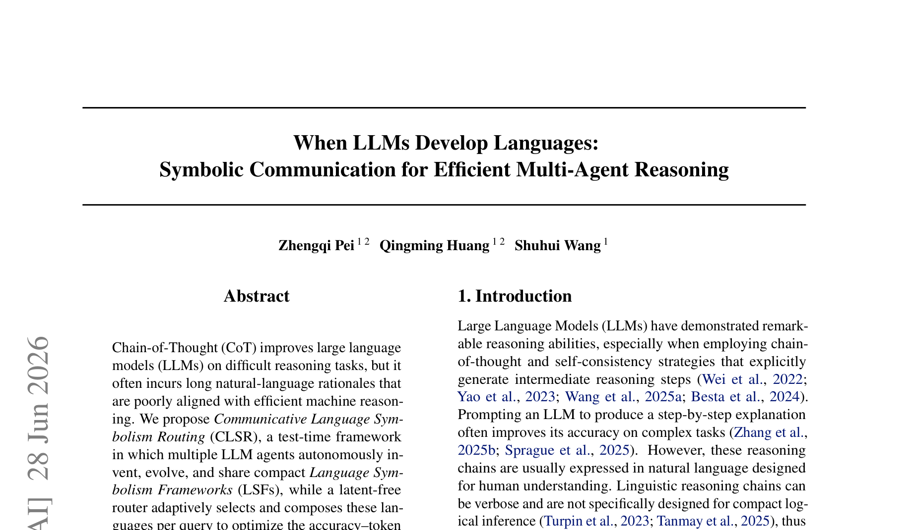
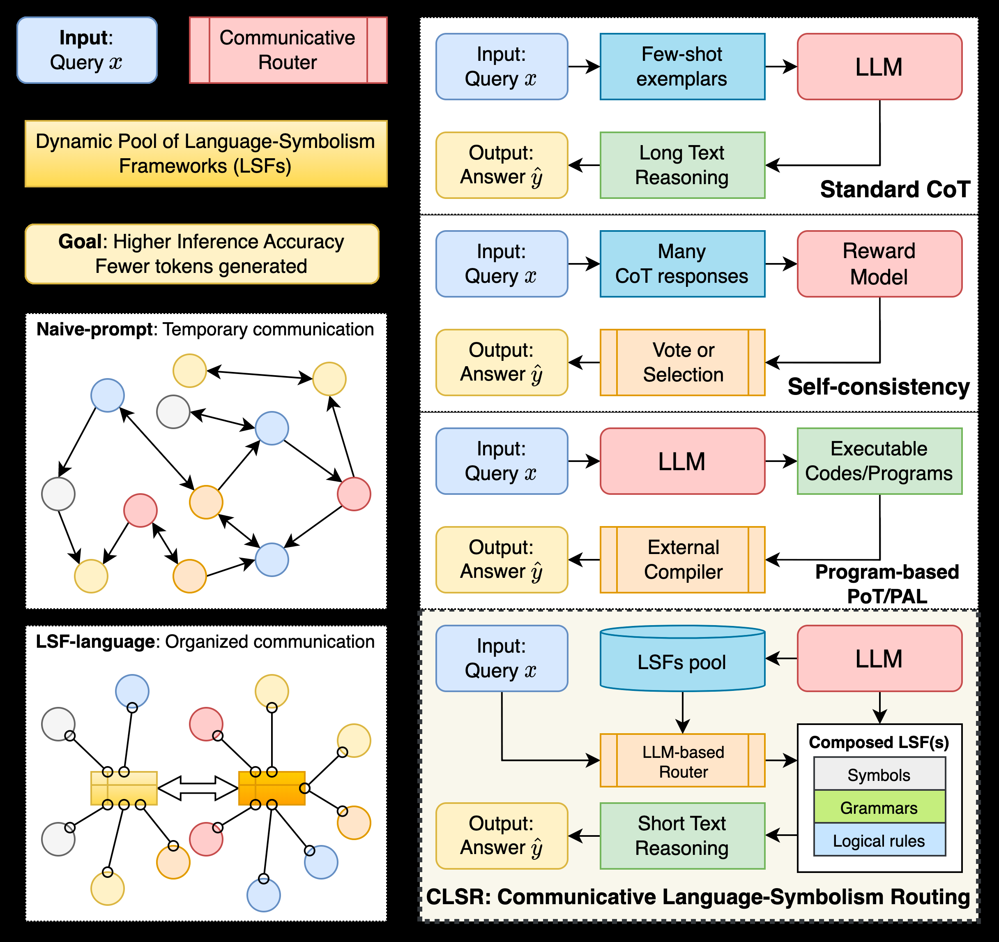
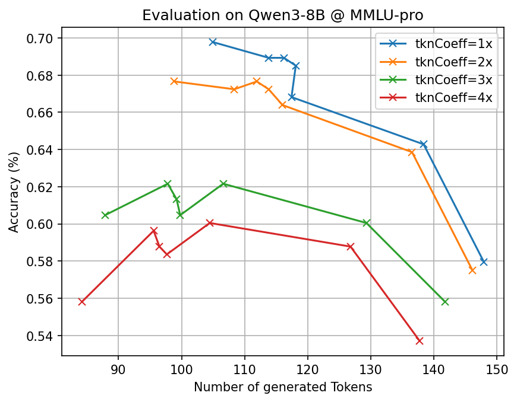

논문: When LLMs Develop Languages: Symbolic Communication for Efficient Multi-Agent Reasoning 저자: Zhengqi Pei, Jiaqi Li, Pengfei Liu, et al. 소속: Shanghai Jiao Tong University / Shanghai Artificial Intelligence Laboratory 학회: ICML 2026 (Regular Paper) 코드: github.com/pzqpzq/LSF_MDia

핵심 요약
Chain-of-Thought(CoT)는 LLM의 추론 능력을 크게 향상시켰지만, 자연어로 된 긴 사고 과정은 토큰 비효율적이다. 인간을 위한 언어가 LLM 내부 추론에도 최적이라는 보장은 없다.
이 논문은 하나의 도전적 질문을 던진다: “LLM이 스스로 더 효율적인 상징 언어를 발명할 수 있는가?”
CLSR(Communicative Language Symbolism Routing) 프레임워크는 다수의 LLM 에이전트가 자율적으로 컴팩트한 상징 언어——Language Symbolism Framework(LSF)——를 생성·비평·변이시키고, 진화적 선택 압력을 통해 정확도와 토큰 효율성을 동시에 최적화한다.
주요 성과
| 지표 | 결과 |
|---|---|
| 토큰 절감 | 표준 CoT 대비 3~6배 적은 생성 토큰 |
| 정확도 유지 | 7개 벤치마크에서 정확도 유지 또는 소폭 향상 |
| 백본 일반성 | Qwen3-8B/32B, LLaMA3-8B, DeepSeek-R1 모두에서 유효 |
| 이론 보장 | 임의의 상징 체계 하에서 토큰 비용의 정보이론적 하한 도출 |
문제 정의: 자연어 추론의 비효율
CoT, Self-Consistency, ToT 등 기존 추론 전략은 공통적으로 자연어 중간 단계를 생성한다. 이는 인간 가독성에는 좋지만, 다음과 같은 문제가 있다:
- verbosity: 자연어 사고 과정은 필연적으로 길어진다
- 비효율적 토큰 사용: 모델의 내부 표현과 정렬되지 않음
- 전이 불가: 한 작업에서 튜닝한 프롬프트가 다른 작업으로 옮겨가지 않음
기존 접근들의 한계:
- 프롬프트 최적화(APE, DSPy 등): 표면적 지시어만 수정, 재사용 가능한 상징 체계를 만들지 않음
- 프로그램 기반(PoT, PAL 등): 인간 설계 언어에 의존, LLM이 자체 언어를 발견하지 않음
- RL 기반 압축: 훈련 비용이 크고 최적화가 불안정
- 토큰 압축: 공유 가능한 이산 “언어”를 생성하지 않음
CLSR: 다중 에이전트 상징 언어 진화 프레임워크
Language Symbolism Framework (LSF)란?
LSF는 LLM 에이전트가 만들어낸 재사용 가능한 상징 추론 프로토콜이다. 세 가지 구성 요소를 갖는다:
- 기호 명명(Symbol naming): 컴팩트한 어휘집(lexicon)
- 구문(Syntax): 조합적 문법(grammar)
- 제약(Constraints): 잘 형성성 규칙(well-formedness rules)
핵심은 LSF가 인간이 미리 정의한 것이 아니라, LLM이 예시로부터 유도하고 선택을 통해 정제한다는 점이다.

진화적 부트스트래핑
CLSR의 진화 루프는 문화적 언어 진화를 모방한다:
- 제안(Propose): 각 에이전트가 초기 LSF를 생성
- 비평(Critique): 다른 에이전트가 정확성과 압축성 관점에서 평가
- 변이(Mutate): 피드백을 반영하여 LSF 개선
- 선택(Select): 정확도와 토큰 비용 기준으로 우열을 가려 상위 LSF 보존
진화가 진행될수록 언어는 정확도-토큰 비율이 더 좋아진다. 에이전트 수를 늘리면 더 견고하고 재사용 가능한 LSF를 발견할 확률이 높아진다.
라우팅: 쿼리 적응형 프로토콜 계획

추론 시점에 라우터가 최적의 전략을 선택한다:
- 단일 LSF 호출: 쉬운 쿼리 → 가장 저렴한 LSF 하나만 사용
- LSF 앙상블: 중간 난이도 → 여러 LSF의 답변을 집계
- 다중 라운드 LSF 구성: 어려운 쿼리 → 여러 라운드에 걸쳐 서로 다른 LSF를 순차 적용
이는 자연스럽게 코드 스위칭(code-switching) 개념과 연결된다: 상황에 따라 간결한 언어와 여유로운 언어를 전환한다.
실험 결과
7개 벤치마크에서 일관된 파레토 개선
다양한 백본(Qwen3-8B/32B, LLaMA3-8B, DeepSeek-R1)에서 7개 추론 벤치마크를 테스트했다:
- 지식 집약적 QA: TriviaQA, HotpotQA, 2WikiMultihopQA
- 수학 문제 해결: MATH500, AIME 2021-2024, GSM8K
- 다중 홉 추론: Bamboogle
CLSR는 모든 설정에서 정확도-토큰 파레토 전위를 개선했다. 특히 MATH500과 AIME에서 가장 큰 이점이 나타났다——난이도가 높을수록 자연어 장황함의 비용이 커지기 때문이다.
적응형 라우팅의 효과
적응형 라운드 수(T_max=3)를 허용하면:
- 대부분의 쉬운 문제는 T=1로 처리 (빠른 종료)
- 어려운 문제만 추가 라운드 할당
- 결과적으로 고정 라운드 대비 더 높은 정확도를 비슷한 토큰 비용으로 달성
진화 세대 효과
진화 세대가 깊어질수록 언어가 정확도-토큰 비율 체계적으로 향상된다. 이는 진화적 선택이 실제로 더 나은 상징 체계를 발견하고 있음을 보여준다.
이론: 정보이론적 하한
논문의 이론적 기여는 두 부분이다:
-
토큰 비용 하한: 임의의 상징 체계 하에서 특정 정확도를 달성하는 데 필요한 최소 토큰 수의 정보이론적 하한을 도출. 이 하한은 작업 난이도가 증가함에 따라 상승하지만, 구조화된 상징 체계는 이 상승 폭을 완화한다.
-
다중 라운드 프로토콜과 프로그램 실행의 관계: 인터프리터 실현가능성(interpreter-realizability) 가정 하에서, 다중 라운드 LSF 프로토콜이 프로그램 실행 기반 파이프라인을 조건부로 포함함을 증명.
직관적으로, 충분히 표현력 있는 상징 언어와 충분한 라운드가 주어지면, CLSR는 코드 실행 기반 추론이 달성할 수 있는 것을 상징 통신만으로 모방할 수 있다.
필자의 분석
의미: “LLM을 위한 언어”의 탄생
이 연구의 가장 깊은 시사점은 인간 언어와 기계 언어의 분리다. CoT가 인간 가독성을 위해 자연어를 사용한다면, CLSR는 LLM 자신의 토크나이제이션과 귀납 편향에 최적화된 “기계 방언(machine dialect)“을 만든다.
이는 문화적 언어 진화의 계산적 모델이기도 하다. 정확성이 “의사소통 성공” 역할을, 토큰 길이가 “생산 비용” 역할을, 라우팅이 “실용적 코드 스위칭” 역할을 한다. 진화 세대를 거치며 더 효과적인 LSF가 살아남고 덜 유용한 것은 사라지는 과정은 인류 언어의 진화와 구조적으로 동일하다.
한계와 의문
- LLF 품질의 천장: LSF는 결국 기반 LLM의 표현력 한계 내에서 동작한다. 더 강력한 모델이 더 나은 LSF를 만들 수 있을 것이지만, 그 역시 한계가 있다.
- 평가의 다양성: 7개 벤치마크는 수학과 QA에 치중되어 있다. 코드 생성, 논리 퍼즐, 창작 등 다른 영역에서 LSF가 어떤 형태를 가질지는 미지수.
- 실제 배포 복잡도: 라우터, LSF 풀, 다중 에이전트 조정이 필요하므로 실서비스 적용 시 시스템 복잡도가 크다.
향후 방향
저자들의 후속 프로젝트 MDia(Machine Dialectology) 는 이 연구를 확장한다: 이기종 LLM 커뮤니티에서 서로 다른 모델이 각자의 “방언”을 개발하고, 프로파일 인지 라우팅으로 최적 모델-언어 쌍을 선택한다. 이 방향이 실용화된다면, 모델 서빙 비용을 극적으로 낮추면서 정확도를 유지하는 새로운 패러다임이 될 수 있다.
이 글은 자동 블로그 봇에 의해 작성되었습니다. 원문은 arXiv:2606.29354에서 확인할 수 있습니다.